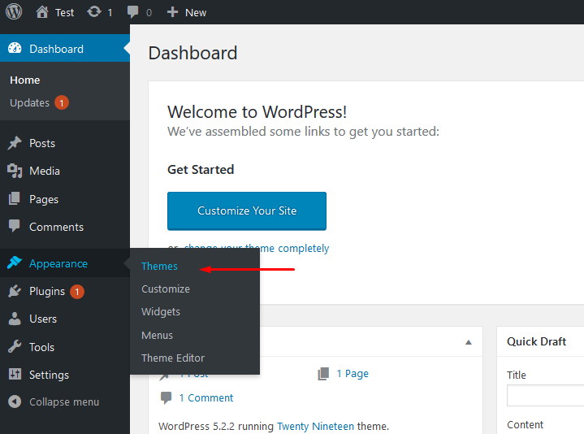
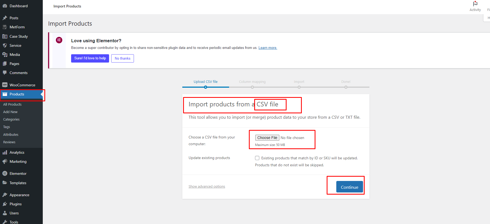
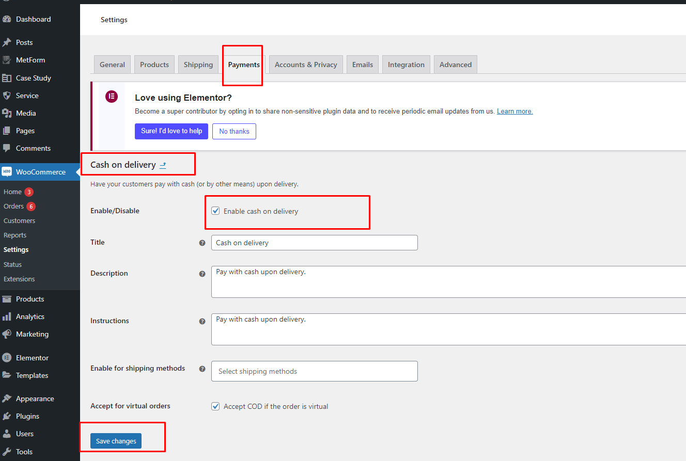
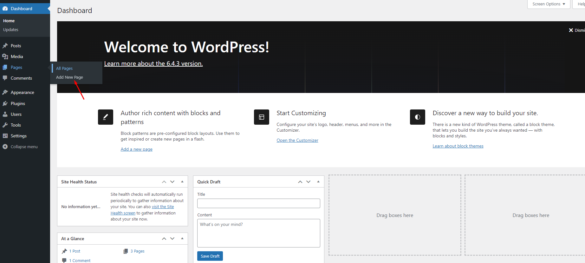

Welcome to CycleCity – CycleCity WordPress Theme Documentation.
- Item Name : CycleCity – CycleCity WordPress Theme Documentation
- Created: 28 Nov 2024
- Item Version : v 1.0
- Author : pixelaxis
First of all, Thank you so much for purchasing this template and for being my loyal customer. You are awesome! You are entitled to get free lifetime updates to this product + exceptional support from the author directly.
This documentation is to help you regarding each step of customization. Please go through the documentation carefully to understand how this template is made and how to edit this properly.
Theme Requirements
To use CycleCity, make sure your hosting provider is running the following software:
- WordPress 4.8 or higher.
- PHP 5.6 or greater. WordPress officially suggests to use PHP 8.2
- MySQL 5.6 or greater.
Recommended PHP Limits
Many issues that you may run into such as: white screen, demo content fails when importing, empty page content and other similar issues are all related to low PHP configuration limits. The solution is to increase the PHP limits. You can do this on your own, or contact your web host and ask them to increase those limits to a minimum as follows:
max_execution_time 180memory_limit 128Mpost_max_size 64Mupload_max_filesize 32Mmax_input_time = 60max_input_vars = 3000
Also consider upgrading your PHP version to the latest version, the newer the better.
WordPress Information
To install this theme you must have a working version of WordPress already installed. If you need help installing WordPress, follow the instructions in WordPress Codex or you can watch the. Below are ll the useful links for WordPress information.
- WordPress Codex – general info about WordPress and how to install on your server
- First Steps With WordPress – general information that covers a wide variety of topics
- FAQ New To WordPress – the most popular FAQ’s regarding WordPress
What's included
When you purchase our theme from Themeforest, you need to download the CycleCityfiles from your Themeforest account. Navigate to your downloads tab on Themeforest and find CycleCity. Click the download button to see the two options. The Main Files contain everything, the Installable WordPress Theme is just the installable WordPress theme file. Below is a full list of everything that is included when you download the main files, along with a brief description of each item.
-
Installable WordPress file only. You can upload this file when you install the theme.
-
All files and documentation (full zip folder). You will need to extract and locate the installable WordPress file to upload when you install the theme.
Theme Installation
It’s easy to install CycleCity. Just follow these steps, they won’t take much of your time.
- Download the theme zip file from your Envato account from ThemeForest.
- **All files & documentation **(full zip folder). You will need to
extract and locate the
installable WordPress file to upload when installing theme

- Log in to your WordPress Dashboard (Ex: http://yourwebsite.com/wp-admin).
- Navigate to Appearance > Themes.

- Click on Add New and then Click on Upload Theme .
- Click Add New, then click Upload Theme >
Choose File

- Navigate to the .zip file on your computer, then click Install Now
- When the installation complete, click Activate. You will be redirected to Themes page with CycleCityactivated.
- Done.
Install theme via FTP
To manually upload your new WordPress theme, login with your credentials to your website and locate the wp-content folder in your WordPress install files. Upload the un-zipped 'sada' folder into the: wp-content/themes folder.
Once uploaded, activate the theme by heading to the “Themes” menu in the WordPress Dashboard. Locate the CycleCitytheme and hit “Activate”.
The theme files will be stored on your server in the
wp-content/themes/ location.
Note: When uploading your theme with the installer, please ensure you are uploading the theme .zip file, not the entire package you downloaded. In this case, you will be uploading CycleCity.zip.
Plugin Installation
After activating CycleCity, you will see this notice:
Click Begin installing plugins. You will be navigated to Install Required Plugins page.
Simply check all of them (or all of required plugins and some recommended plugins you like) and from the drop down select Install, then hit Apply.
When finishing, it should look like this:

Demo Installation
Our demo data import lets you have the whole data package in minutes, delivering all kinds of essential things quickly and simply. All you need to do is to navigate to Appearance >Import. Hit Import this demo.

Have a cup of coffee. The process is within minutes.
When finishing, it should look like this:

Go to Setting > Reading > Front page displays and choose the page you like to be your front page then hit Save changes.
Setup Theme
After demo data import you need to go to Settings > Permalinks and click Post Name and save it
Then You need to go to Elementor > Setting and go to post type and enable this for edit this with elementor
Theme Customizer
To access the theme customize settings, go to Appearance → Customize → Theme Customizer
General Settings
Header Settings
Retina Logos
To make your logos look crisp on Retina devices, simply upload a Retina logo to the corresponding upload fields.
Retina versions are twice as large as the original ones. For example, if your logo is
100px
x 50px, the Retina version must be 200px x 100px.
Breadcrumb Setting
Theme Color Setting
Default Blog Setting
WooCommerce
Default WooCommerce Setting
To access the default WooCommerce settings, go to Appearance → Customize → WooCommerce
Favicon Setting
Elementor Header Footer Builder
There are lots of service section in this them.You will find this service section in dashboard.
Service
There are lots of service section in this them.You will find this service section in dashboard.
If you want to change or edit service content easily
If you want to change service details click edit with elemetor then you can edit add or delet content in service details page easily
Woocommerce
There are lots of woocommerce section in this them.You will find this woocommerce section in dashboard.
If you want to Product Import
If you want to change or edit woocommerce Setting easily
Contact Form Setup
Overflow comes with integrated support for the Contact Form 7 plugin:
Contact Page Form
<div class="field">[text* your-name placeholder "Enter Name"][email* your-email placeholder "Email Address"]</div> [text* your-subject placeholder "Name Of Subject"] [textarea your-message placeholder "Desciption"] [submit "Send"]
Page Options
On each page you'll see a Template Settings metabox, located below the page content editor. This metabox includes various options to control the header style , footer visibility and Logo Setting on each page.
Create a New Page
Step 1: Navigate to Pages in your admin sidebar and click Add New option.
Step 2: Enter a new name for your page, then find the Page Attributes box on right side to set your Parent or Template page.
Use Elementor Page Builder to Build Page
Step 1: Choose Edit With Elementor to edit your page.
Step 2: Choose Add Element to start adding our premade elements to your new page.
How to Change Page Title
Step 1: Go to Pages > All Pages. Then point at the page you want to edit. You will see the Quick Edit option.
Step 2: Edit the title as you want. Delete the current slug. Then hit Update. It will automatically generate new slug for your page.
You can also edit some other options such as parent, template, status... If you want to edit more options, hit Edit instead of Quick Edit.
How to Create a New Post
Step 1: Navigate to Posts > Add New in your WordPress admin sidebar.
Step 2: Create a title, and insert your post content in the editing field.
Step 3: For a video/audio post, just simply paste the video/audio URL into the Embed Code field.
Step 4: Add Categories from the right side. Categories is meta information you create for the post. Each category is a meta link that your viewer can click to view similar type of posts. To assign it to the post, check the box next to the Category name. You can also access and edit Categories from the Post sidebar item in your WordPress admin sidebar.
Step 5: Add Tags from the right side. Tags is meta information you create for the post. Each tag is a link that your viewer can click to view similar type of posts. Type the name of the tag in the field, separate multiple tags with commas. You can also access and edit Tags from the Post sidebar item in your WordPress admin sidebar.
Step 6: For a single image, click the first Featured Image Box, select an image and click the Set Featured Image button.
Step 7: You can also customize Page Title & Sidebar Options in Settings.
Step 8: Once you are finished, click Publish to save the post.
Here is the screenshot that shows the various areas of the blog post page:
How to Create a Category
Step 1: Post >> Categories
Step 2: Name the category and fill to other section below.
Step 3: Hit Add New Category. Your new Category will aprear in the table of all category immediately.
Similar to Category, you can create a new Tag in the same way.
How to Add Widget in Sidebar
Step 1: Appearance >> Widgets. You can see all of the Sidebar here.
Step 2:Choose the Widgets you want and drag it to the Sidebar you want or click on it to choose the Sidebar.
In the case you want to delete its settings, drag it back.
How to Edit Widget
Hit Appearance > Widgets. Choose a widget you want to edit.
Then choose its area as you wish and hit Add Widget.
Then go to the right where you will notice a just-added widget. In this case, Search on Footer|#2. Type information and hit Save.
Finally Widget setup done. See your site now
Elementor Slider Widget
Slider Edit With Elementor
Elementor About Widget
About Edit With Elementor
Elementor Blog Widget
Blog Edit With Elementor
Elementor Section Widget
Section Edit With Elementor

Elementor Shop Widget
Shop Edit With Elementor
Free Support System
All of BasicTheme’s
items
come with
6 months of included support and free lifetime updates for your
Theme.
Once the 6 months of included support is up, you have the opportunity to extend
support
coverage up to 6
or 12 months further.
If you choose to not extend your support, you will still be able to submit bug
reports
via
email or item
comments and still have access to our online documentation knowledge base and video
tutorials.
We have an advanced, secure ticket system to handle your requests. Support is limited to questions regarding the theme’s features or issues that are related the theme. We are not able to provide support for code customizations or third-party plugins. If you need help with anything other than minor customization of your theme, we suggest enlisting the help of a developer.
Our Support Mail
All of our items come with free support, and we have a dedicated mail: pixeltheme96@gmail.com to handle your requests. Support is limited to questions regarding the theme’s features or problems with the theme. We are not able to provide support for code customizations or third-party plugins. If you need help with anything other than minor customizations of your theme then you should enlist the help of a developer.
For more information on Item Support Policy please refer to the original document..
Thank you for use this theme.
Once again, thank you so much for purchasing this theme. As I said at the beginning, I'd be glad to help you if you have any questions relating to this theme. No guarantees, but I'll do my best to assist. If you have a more general question relating to the themes on ThemeForest, you might consider visiting the forums and asking your question in the "Item Discussion" section.